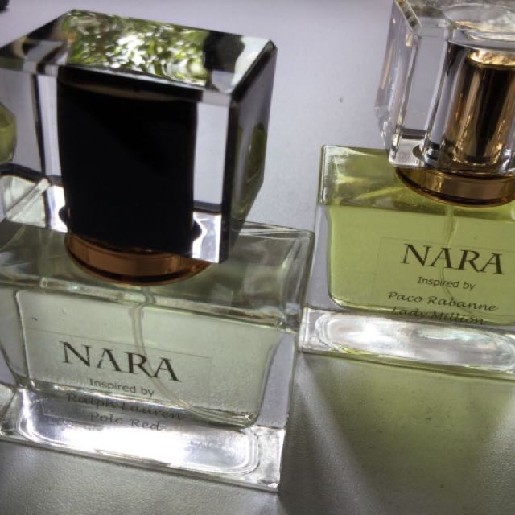

WELCOME TO NATURE PERFUME
NARRA PERFUME.
NARRA PERFUME
- Nara, where majestic temples are nestled amongst the sublime forests of Japan. Ancient forgotten scents whisper sacred stories of divinity & the dawn of time.
Scent: Earthy, Spicy, Resinous with Cistus Notes.
Ingredients: Grape Alcohol, Sweet Orange essential oil, Yuzu essential oil, Red Mandarin essential oil, Benzoin extract, Ylang ylang essential oil, Patchouli essential oil, Ginger essential oil, Frankincense essential oil, Myrrh essential oil, Sandalwood essential oil, Cistus essential oil, Cinnamon essential oil, Clove essential oil.
To use: Spray on skin or clothing. Avoid face area.
Take care: As our perfume contains essential oils we recommend doing a patch test before use. In the unlikely event skin irritation occurs cease use immediately. If pregnant consult your health care practitioner before use. Store below 30 degrees and out of direct sunlight to preserve product integrity.
"Perfume is not just a product, but a way of being in the world that for centuries retained an aura of magic and mystery."
|

|